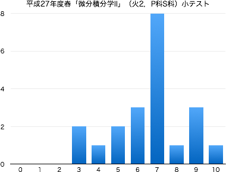

連絡事項
授業の目的
自然科学のみならず工学のさまざまな分野で、現象を表現・解析する手段として微分積分学の知識は欠かせない。
微分積分学の概念・計算技法を身につけるために、1変数関数を対象とした積分法について学習する。基礎的な計算技法に習熟するとともに、図形の面積・体積や曲線の長さへの応用について理解する。
達成目標
- 初等関数の原始関数を求めることができる。
- 置換積分法を利用して原始関数を求めることができる。
- 部分積分法を利用して原始関数を求めることができる。
- 初等関数の定積分を求めることができる。
- 広義積分を求めることができる。
- 積分の計算技法を用いて、図形の面積・体積、曲線の長さを求めることができる。
科目の位置づけ
-
微分積分学I → 微分積分学II → 微分積分学III
これまでの授業と今後の予定
| 第1回 |
4月 |
14日（火） |
ガイダンス
不定積分の基本概念 第1章 §2.1
|
| 第2回 |
|
21日（火） |
初等関数の原始関数 (1) 整式・冪関数 第4章 §1.1 (p.113-116) |
| 第3回 |
|
28日（火） |
初等関数の原始関数 (2) 指数関数・三角関数 第4章 §1.1 (p.116,117) |
| 第4回 |
5月 |
12日（火） |
置換積分法 第4章 §2.1 |
| 第5回 |
|
19日（火） |
部分積分法 第4章 §2.2 |
| 第6回 |
|
26日（火） |
三角関数の不定積分 第4章 §3.1, 3.2 |
| 第7回 |
6月 |
2日（火） |
部分分数分解，有理関数の不定積分 第4章 §4.1 第4章 §1.2 |
| 第8回 |
|
9日（火） |
小テスト（問題 | 解答 | 得点分布） |
| 第9回 |
|
16日（火） |
無理関数の不定積分 第4章 §4.2 第4章 §1.2 |
| 第10回 |
|
23日（火） |
定積分の定義とその基本性質，微分積分学の基本定理 第1章 §2.2 第5章 §1.1, 1.2, 1.3 ，定積分の計算 (1) 初等関数 第5章 §2.1 |
| 第11回 |
|
30日（火） |
定積分の計算 (2) 置換積分法と部分積分法 第5章 §2.2 |
| 第12回 |
7月 |
7日（火） |
広義積分 第5章 §3.1, 3.2 |
| 第13回 |
|
14日（火） |
面積 第5章 §4.1 |
| 第14回 |
|
16日（木） |
これまでのまとめ・問題演習 |
|
|
28日（火） |
期末試験（問題 | 解答 | 得点分布） |
教科書・参考文献について
- 矢野健太郎・石原繁編 『微分積分』 裳華房 » リンク
評価について
- 期末試験80%，小テスト・演習課題など20%の割合で評価する．
- 毎回の授業で問題演習を実施する．手順は以下；
- 教科書等の問題を指定し，指定の答案用紙に解答して提出してもらいます（指定の用紙しか受け付けません）．
- 解答後は必ず答え合わせをして，正しくない場合は途中式のどこが間違えているか探して訂正してください（正答をただ書き写すことではありません）．
- 授業時間内に終わらない場合は，次回の授業の前々日（ただし土日を除く）の17:00までに私に直接手渡すか，研究室のドアの封筒に提出してもらいます．提出期限が過ぎた答案は一切受け取りません．
- 1回の提出につき1点を加点します（合計点数は最大10点）．
ただし，不完全な答案（解答されていない問題がある，答え合わせをしていない，誤答が正されていない，等々の不備）は加点しません．
- 中間期に小テスト（ミニ中間試験）を実施する（10点）．
- 期末試験を実施する（100点満点）．
- $\min\{10,$(課題提出回数)$\}+$(中間小テストの点数)$+$(期末試験の点数)$\times 0.8\geqq 60$ で合格とする．
その他
- 平成27年度のスチューデントアワー (SH) は月火水木の昼休みです．
-
Twitterでも，授業に関する情報を発信していきます（ハッシュタグは #15Sdic2PS ）．質問，意見などのリプライを歓迎します．
-
授業に対する基本的な考え方にも目を通しておいてください．
- 授業の欠席について
- 出席点というものがないので，休んだことの届け出は基本的にしなくて結構です．友人にノートを写させてもらうなどの対処を各自行ってください（課題の有無も確認してください）．
- 休んだ回の課題を提出する意思があるならば，メール等で連絡の上，答案用紙を受け取りに来てください（またはここからダウンロードして印刷）．レポート用紙やルーズリーフでの提出は原則不可です．
- 病欠等で数日休んでしまった場合は，課題の提出期限を猶予します．その際は，答案用紙を受け取る際に欠席届け等を見せてください．
試験の得点分布と評価など
- 小テスト：問題と解答（平均点 6.6点）

- 期末試験：問題と解答（平均点 52.8点）
|
| 履修者 | 27 |
| 受験者 | 18 |
| AA | 0 |
| A | 3 |
| B | 3 |
| C | 4 |
| D | 8 |
| 未受験 | 9 |
| 単位修得者 | 10 |
| 単位修得率 | 55.6% |
|